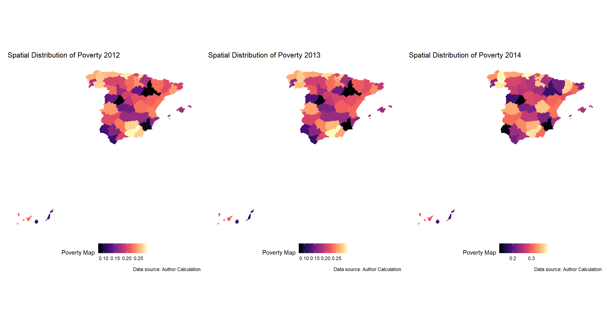

survey_dt <- bd_clean |> pin_read("pov_direct")
rhs_dt <- bd_clean |> pin_read("sae_data")
shp_dt <- bd_clean |> pin_read("geometries")3 Stable FH Estimates over T Time Periods: The Multivariate Fay Herriot Modelling Approach
4 Stable FH Estimators over T time periods: The Multivariate Fay Herriot Modelling Approach
This section describes procedures that yield stable small area estimators for each of \(D\) areas over \(T\) subsequent time instants. Area populations, the samples and the data might change between time periods. Accordingly, we denote \(U_t\) the overall population at time \(t\), which is partitioned into \(D\) areas \(U_{1t}, ... ,U_{Dt}\), of respective population sizes \(N_{1t}\)
An overview of the MFH model estimation process is as follows:
Step 0: The data preparation phase in which we prepare the 3 data objects needed for the small area estimation under the Multivariate Fay Herriot Model
Step 1: Compute the selected direct area estimators for each target area \(d = 1, ..., D\) for each time \(t = 1, ..., T\) and estimators of their corresponding sampling variances and covariances.
Step 2: Prepare variables (from administrative data or other sources of data representative at the target area level) at the level of the target area for each time instant in the MFH model. We present a simple approach which performs model selection in a pooled linear regression model without time effects.
Step 3: Fit the MFH models to test for homoskedastic area-time effects \(({\mu_d}_1, ... , {\mu_d}_T)\) are homoskedastic or not. If we reject the homoskedasticity of variances, implement the MFH3 model. Otherwise, we proceed with the MFH2 model. For the purposes of this training, we assume a homoskedastic model for simplicity.
Step 4: Check the selected model assumptions, including linearity, normality of predicted area effects and standardized model residuals, and the presence of the outlying areas.
Step 5: In case of systematic model departures such as isolated departures because of outlying areas, some adjustments might need to be implemented before returning to Step 2 to recompute the MFH model.
Step 6: If model assumptions hold, using the above direct estimates and estimated sampling variances and covariances, and the selected auxiliary variables, compute MFH estimators \(\hat{\delta}_{dt}^{MFH},\quad d = 1,...,D\) and \(t = 1, ..., T\) and their corresponding estimated MSEs.
We will show below the use of the eblupMFH2() and eblupMFH3() from the R package msae (Permatasari, Ubaidillah, and Permatasari 2022) compute the EBLUPs and their MSE estimates under the MFH models 2 and 3, respectively. The calls to these functions are:
eblupMFH2(formula, vardir, MAXITER = 100, PRECISION = 1e-04, data)
eblupMFH3(formula, vardir, MAXITER = 100, PRECISION = 1e-04, data)
4.1 MFH Estimation of Poverty Rates for T time periods
In this example, we use a synthetic data set adapted from R package sae called incomedata. The original data contains information for \(n = 17,119\) fictitious individuals residing across \(D = 52\) Spanish provinces. The variables include the name of the province of residence (provlab), province code (prov), as well as several correlates of income. We have added two additional income vectors corresponding to two additional years of data.
We will show how to estimate a poverty map for each year by using the Multivariate Fay Herriot modelling approach. This approach allows us to take advantage of the temporal correlation between poverty rates i.e. an individuals income in year \(t\) is likely correlated with their income in year \(t+1\).
The rest of this tutorial shows how to prepare MFH models using a random 10% sample of the incomedata to estimate the poverty rates.
4.2 Step 0: The Data Preparation Phase
The MFH estimation process relies on 3 types of data:
The data containing the outcome variable from which direct estimates will be computed. This is a usually a survey dataset for each year of data including outcome variable (such as income or welfare aggregates), weights, cluster identifiers (i.e. if available, psu or enumeration areas) at the unit level i.e. individual or household. In this example, we call this:
survey_dtA dataset containing for the right hand side (RHS) variables i.e. indicator estimates representative at the level of the target area for each year. This is often obtained from administrative data sources or geospatial data such as remotely sensed high resolution data. The final RHS dataset ought to include an area id, year and variables of interest. In this example, we call this
rhs_dtFinally, a shapefile which spatially links each target area to their boundaries on a map. This will contain the area id as well as the geometry object which when visualized will show the shape of the areas in which poverty rates will be estimated. In this example, we call this
shp_dt
Below is what our datasets look like. These are generally the variables
Rows: 12,894
Columns: 7
$ provlab <fct> Alava, Alava, Alava, Alava, Alava, Alava, Alava, Alava, Alava,…
$ prov <int> 1, 1, 1, 1, 1, 1, 1, 1, 1, 1, 1, 1, 1, 1, 1, 1, 1, 1, 1, 1, 1,…
$ weight <dbl> 25977.699, 25977.699, 25977.699, 19471.566, 19471.566, 19471.5…
$ ea_id <int> 101, 101, 101, 102, 102, 102, 103, 103, 103, 103, 103, 103, 10…
$ year <int> 2012, 2013, 2014, 2012, 2013, 2014, 2012, 2012, 2012, 2012, 20…
$ income <dbl> 5150.399, 5204.872, 5480.116, 27920.737, 28508.978, 31512.153,…
$ povline <dbl> 6477.484, 6515.865, 6515.865, 6477.484, 6515.865, 6515.865, 64…survey_dt contains our target area identifiers (provlab, prov), the weight variable weight, the cluster id i.e. enumeration area or psu, ea_id, the year, year, the income variable income and the poverty line poverty. In this example, survey_dt of class data.frame is at the level of the individual. It could also be at the level of the household if poverty lines are evaluated at that level.
Rows: 156
Columns: 39
Groups: prov [52]
$ prov <int> 1, 2, 3, 4, 5, 6, 7, 8, 9, 10, 11, 12, 13, 14, 15, 16, …
$ provlab <fct> Alava, Albacete, Alicante, Almeria, Avila, Badajoz, Bal…
$ gen <dbl> 1.591661, 1.512574, 1.531217, 1.379440, 1.469752, 1.412…
$ age2 <dbl> 0.10662920, 0.15809756, 0.09547348, 0.16773730, 0.00000…
$ age3 <dbl> 0.3874807, 0.4944282, 0.3547117, 0.4673372, 0.4989752, …
$ age4 <dbl> 0.245845529, 0.059850454, 0.174966688, 0.005694235, 0.1…
$ age5 <dbl> 0.19980439, 0.18429053, 0.23276281, 0.18630876, 0.27121…
$ educ1 <dbl> 0.21756579, 0.22430208, 0.38687301, 0.34254113, 0.40534…
$ educ2 <dbl> 0.2353839, 0.4386757, 0.3915053, 0.3840035, 0.3181650, …
$ educ3 <dbl> 0.32395951, 0.10794670, 0.07260912, 0.10053284, 0.20833…
$ nat1 <dbl> 0.9653883, 0.9837955, 0.9436051, 0.8789277, 1.0000000, …
$ labor1 <dbl> 0.3692168, 0.4513452, 0.4054253, 0.5191851, 0.4992434, …
$ labor2 <dbl> 0.000000000, 0.036094381, 0.047285012, 0.040264017, 0.0…
$ labor3 <dbl> 0.4076923, 0.2834849, 0.3982771, 0.2676284, 0.4326099, …
$ abs <dbl> 0.84933922, -0.97816135, 0.98863150, 0.31350535, -1.419…
$ ntl <dbl> 0.2091905, 1.1589425, -0.4210840, 1.5472493, -2.1440414…
$ aec <dbl> 1.16518757, -0.55990121, -0.66408247, -0.70557145, 4.99…
$ schyrs <dbl> 1.70993214, -0.96018920, -0.18004563, 0.22504016, -1.64…
$ mkt <dbl> 2.5782541, -1.0468569, -0.2044435, -0.9811182, -1.08118…
$ age2_X_gen <dbl> 0.15555592, 0.26628138, 0.15033171, 0.21079949, 0.00000…
$ age3_X_gen <dbl> 0.6647560, 0.7222008, 0.5516074, 0.6262462, 0.7645003, …
$ age4_X_gen <dbl> 0.36008687, 0.10298379, 0.26866795, 0.01138847, 0.26583…
$ age5_X_gen <dbl> 0.35102165, 0.30664168, 0.35115346, 0.28723752, 0.37126…
$ educ1_X_gen <dbl> 0.3687830, 0.3682332, 0.5879137, 0.5256249, 0.6863470, …
$ educ2_X_gen <dbl> 0.4130652, 0.7220561, 0.6010236, 0.4517964, 0.4494350, …
$ educ3_X_gen <dbl> 0.53779476, 0.16167700, 0.12157537, 0.15825036, 0.26582…
$ nat1_X_gen <dbl> 1.557049, 1.480165, 1.453477, 1.206699, 1.469752, 1.376…
$ labor1_X_gen <dbl> 0.6529375, 0.6858805, 0.5812196, 0.6455309, 0.7541068, …
$ labor2_X_gen <dbl> 0.000000000, 0.072188761, 0.086971286, 0.040264017, 0.0…
$ labor3_X_gen <dbl> 0.6667055, 0.4938971, 0.6423218, 0.4498768, 0.6474986, …
$ age2_X_educ3 <dbl> 0.000000000, 0.000000000, 0.000000000, 0.000000000, 0.0…
$ age3_X_educ3 <dbl> 0.18883381, 0.05231836, 0.02345535, 0.10053284, 0.00000…
$ age4_X_educ3 <dbl> 0.110497526, 0.036933029, 0.025056921, 0.000000000, 0.1…
$ age5_X_educ3 <dbl> 0.024628173, 0.018695319, 0.024096847, 0.000000000, 0.0…
$ nat1_X_educ3 <dbl> 0.32395951, 0.10794670, 0.06702616, 0.06418623, 0.20833…
$ labor1_X_educ3 <dbl> 0.274032897, 0.052318355, 0.036012387, 0.100532844, 0.1…
$ labor2_X_educ3 <dbl> 0.000000000, 0.000000000, 0.006859625, 0.000000000, 0.0…
$ labor3_X_educ3 <dbl> 0.049926612, 0.055628348, 0.029737105, 0.000000000, 0.0…
$ year <int> 2012, 2012, 2012, 2012, 2012, 2012, 2012, 2012, 2012, 2…`rhs_dt is an object of class data.frame created at the level of the target area. It should contain the same target area identifiers as in survey_dt and the year variable year.
Rows: 52
Columns: 3
$ prov <int> 1, 2, 3, 4, 5, 6, 7, 8, 9, 10, 11, 12, 13, 14, 15, 16, 17, 18…
$ provlab <fct> Alava, Albacete, Alicante, Almeria, Avila, Badajoz, Baleares,…
$ geometry <MULTIPOLYGON [°]> MULTIPOLYGON (((-2.858067 4..., MULTIPOLYGON (((…shp_dt is an object of class sf, data.frame created at the level of the target area. This is the shapefile for the area of interest for which the poverty map will be estimated. It should contain the same target area ID found in survey_dt as well as rhs_dt.
A quick summary table on the data needs for the MFH model:
| Data Input Checklist for the Multivariate Fay-Herriot Model | ||
|---|---|---|
| Datasets, levels, and Required variables | ||
| Dataset Name | Unit of Observation | Required Variables |
survey_dt |
Individual (or Household) | target area identifiers, weights, cluster identifier, year, income/welfare variable, poverty line |
rhs_dt |
Target Area (e.g. Province) | target area identifiers, year, covariates (e.g. gen, educ1, schyrs, etc.) |
shp_dt |
Target Area (Spatial) | target area identifiers, geometries (e.g. geometry column from sf) |
For ease of use of this tutorial, make sure the variable names match as described across the datasets i.e. use the same target area variables and year variable name across all 3 datasets.
4.3 Step 1: Direct Estimation of Poverty & Variance-Covarance Matrix
We will use the direct HT estimators that use the survey weights in weight variable. First, we calculate the total sample size, the number of provinces, the sample sizes for each province and extract the population sizes for each province/target area from the sizeprov file. For those using the household/individual level survey data, this may be obtained from the sum of the household or individual weights as appropriate.
4.3.1 Simple Direct Estimation
The goal is simply to apply the poverty line to the
### a little bit of housekeeping to ensure ease of access
area_vars <- c("prov", "provlab") ### both variables are at the same level. if the levels vary, you would need to combine both variables for effect use
cluster_var <- "ea_id"
weight_var <- "weight"
year_var <- "year"
outcome_var <- "income"
povline_var <- "povline"
candidate_vars <- colnames(rhs_dt)[!colnames(rhs_dt) %in% c(area_vars, year_var)]
### quickly compute the sample size for each province
sampsize_dt <- survey_dt |>
group_by(!!!syms(area_vars), !!sym(year_var)) |>
summarize(N = n(), .groups = "drop")
## the poverty line for each is already included within the data.
## Lets compute the direct estimates for each year of data and create a list of data.frames (equal in length to the number of years)
## containing the direct estimate, the standard errors and the coefficient of variation.
direct_dt <-
survey_dt |>
mutate(pov_indicator = ifelse(income < povline, 1, 0)) |>
group_by(!!!syms(area_vars), !!sym(year_var)) |>
summarise(direct_povrate = weighted.mean(x = pov_indicator,
w = !!sym(weight_var),
na.rm = TRUE),
.groups = "drop")Here is what the results look like:
direct_dt# A tibble: 156 × 4
prov provlab year direct_povrate
<int> <fct> <int> <dbl>
1 1 Alava 2012 0.244
2 1 Alava 2013 0.312
3 1 Alava 2014 0.414
4 2 Albacete 2012 0.159
5 2 Albacete 2013 0.173
6 2 Albacete 2014 0.211
7 3 Alicante 2012 0.163
8 3 Alicante 2013 0.163
9 3 Alicante 2014 0.227
10 4 Almeria 2012 0.297
# ℹ 146 more rows4.3.2 Computing the Variance-Covariance Matrix for the Sampling Error of the Direct Estimate
Next, we quickly estimate the sample variance and covariance for the direct estimator using the survey R package as below. We apply the compute_vcov() function which we have created as a wrapper on the survey::svymean() and survey::svyvar() functions to estimate the variance covariance matrix.
survey_dt <-
survey_dt |>
mutate(pov_indicator = ifelse(!!sym(outcome_var) < !!sym(povline_var), 1, 0))
### we need to reconstruct the variables from long to wide for this
### this wide format will also be useful for estimating the MFH model as well
### later on
widesurvey_dt <-
survey_dt |>
pivot_wider(
id_cols = c(!!!syms(area_vars), !!sym(cluster_var), !!sym(weight_var)),
names_from = !!sym(year_var),
values_from = c(!!sym(outcome_var), !!sym(povline_var), "pov_indicator"),
names_glue = "{.value}{year}",
values_fn = first
)
#### now we are ready to compute the variance covariance matrix
### notice that we have to specify the new column names for the pov_indicator variables as they recreated in widesurvey_dt
var_dt <-
compute_vcov(dt = widesurvey_dt,
domain = area_vars[[1]],
ids = cluster_var,
weights = weight_var,
yvars = paste0("pov_indicator", unique(survey_dt[[year_var]])))
var_dt <-
var_dt |>
rename(!!sym(area_vars[[1]]) := "domain") ### quick rename the domain variable to match our area_vars
### lets merge in our sample sizes
var_dt <-
var_dt |>
merge(sampsize_dt %>%
dplyr::select(!!sym(area_vars[1]), "N") |>
unique(),
by = area_vars[[1]])It is noteworthy that the var_dt object is estimated at the level of the target area. Hence, for reasons that will be made self-evident later, the var_dt is not a matrix for each area rather the matrix is stored rowwise.
4.3.2.1 Handling Low Sample Sizes: Variance Smoothing
A quick inspection of the preceding results will show some provinces contain low sample sizes which sometimes result in extreme value poverty rates and hence 0 variance. To avoid this, we will show you how to apply the variance smoothing method suggested by (You and Hidiroglou 2023). Please see the code and Roxygen comments below explaining the use of the varsmoothie_king() function which computes smoothed variances.
The goal now is to use the above varsmoothie_king() function to add additional columns of smoothed variances into our var_dt object.
varcols <- grep("^v_", names(var_dt), value = TRUE) ## the column names for the variance covariance matrix
var_dt <-
lapply(X = varcols,
FUN = function(x){
z <- varsmoothie_king(domain = var_dt[[area_vars[1]]],
direct_var = var_dt[[x]],
sampsize = var_dt[["N"]]) |>
as.data.table() |>
setnames(old = "var_smooth", new = paste0("vs", x)) |>
as_tibble()
return(z)
}) %>%
Reduce(f = "merge",
x = .) %>%
merge(x = var_dt,
y = .,
by.x = area_vars[[1]],
by.y = "Domain") |>
as_tibble()Now, you can replace the zero/near zero sample size area MSEs with their smoothed variances.
4.4 Step 2: Variable Preparation and Model Selection
4.4.1 Data Preparation for Model Selection & MFH estimation
Thus far, we have careful set up the types of data we require for the MFH model. One final step of variable preparation is necessary to use the eblupUFH and eblupMFH functions. This requires that we reshape the set of candidate variables dataset i.e. the rhs_dt object into wide format. We will also have to reshape our direct estimates and merge this into rhs_dt as well as var_dt. All the data we have created thus far needs to be placed together ultimately for the EBLUP estimation.
## reshaping the rhs_dt from long to wide
widerhs_dt <-
rhs_dt |>
pivot_wider(
id_cols = dplyr::all_of(area_vars),
names_from = dplyr::all_of(year_var),
values_from = dplyr::all_of(candidate_vars),
names_glue = "{.value}{year}",
values_fn = \(x) dplyr::first(x) # or `first`, or something more explicit if needed
)
## now let us reshape and merge in the poverty rates
mfh_dt <-
direct_dt |>
pivot_wider(
id_cols = dplyr::all_of(area_vars),
names_from = dplyr::all_of(year_var),
values_from = "direct_povrate",
names_glue = "{.value}{year}",
values_fn = \(x) dplyr::first(x) # or `first`, or something more explicit if neede
) |>
merge(y = widerhs_dt,
by = area_vars[[1]]) |>
merge(y = var_dt,
by = area_vars[[1]])Here is what the data looks like:
mfh_dt |> glimpse()Rows: 52
Columns: 127
$ prov <int> 1, 2, 3, 4, 5, 6, 7, 8, 9, 10, …
$ provlab.x <fct> Alava, Albacete, Alicante, Alme…
$ direct_povrate2012 <dbl> 0.24394059, 0.15913215, 0.16294…
$ direct_povrate2013 <dbl> 0.31179047, 0.17325814, 0.16268…
$ direct_povrate2014 <dbl> 0.41422988, 0.21133345, 0.22727…
$ provlab.y <fct> Alava, Albacete, Alicante, Alme…
$ gen2012 <dbl> 1.591661, 1.512574, 1.531217, 1…
$ gen2013 <dbl> 1.591661, 1.512574, 1.531217, 1…
$ gen2014 <dbl> 1.591661, 1.512574, 1.531217, 1…
$ age22012 <dbl> 0.10662920, 0.15809756, 0.09547…
$ age22013 <dbl> 0.10662920, 0.15809756, 0.09547…
$ age22014 <dbl> 0.10662920, 0.15809756, 0.09547…
$ age32012 <dbl> 0.3874807, 0.4944282, 0.3547117…
$ age32013 <dbl> 0.3874807, 0.4944282, 0.3547117…
$ age32014 <dbl> 0.3874807, 0.4944282, 0.3547117…
$ age42012 <dbl> 0.245845529, 0.059850454, 0.174…
$ age42013 <dbl> 0.245845529, 0.059850454, 0.174…
$ age42014 <dbl> 0.245845529, 0.059850454, 0.174…
$ age52012 <dbl> 0.19980439, 0.18429053, 0.23276…
$ age52013 <dbl> 0.19980439, 0.18429053, 0.23276…
$ age52014 <dbl> 0.19980439, 0.18429053, 0.23276…
$ educ12012 <dbl> 0.21756579, 0.22430208, 0.38687…
$ educ12013 <dbl> 0.21756579, 0.22430208, 0.38687…
$ educ12014 <dbl> 0.21756579, 0.22430208, 0.38687…
$ educ22012 <dbl> 0.2353839, 0.4386757, 0.3915053…
$ educ22013 <dbl> 0.2353839, 0.4386757, 0.3915053…
$ educ22014 <dbl> 0.2353839, 0.4386757, 0.3915053…
$ educ32012 <dbl> 0.32395951, 0.10794670, 0.07260…
$ educ32013 <dbl> 0.32395951, 0.10794670, 0.07260…
$ educ32014 <dbl> 0.32395951, 0.10794670, 0.07260…
$ nat12012 <dbl> 0.9653883, 0.9837955, 0.9436051…
$ nat12013 <dbl> 0.9653883, 0.9837955, 0.9436051…
$ nat12014 <dbl> 0.9653883, 0.9837955, 0.9436051…
$ labor12012 <dbl> 0.3692168, 0.4513452, 0.4054253…
$ labor12013 <dbl> 0.3692168, 0.4513452, 0.4054253…
$ labor12014 <dbl> 0.3692168, 0.4513452, 0.4054253…
$ labor22012 <dbl> 0.000000000, 0.036094381, 0.047…
$ labor22013 <dbl> 0.000000000, 0.036094381, 0.047…
$ labor22014 <dbl> 0.000000000, 0.036094381, 0.047…
$ labor32012 <dbl> 0.4076923, 0.2834849, 0.3982771…
$ labor32013 <dbl> 0.4076923, 0.2834849, 0.3982771…
$ labor32014 <dbl> 0.4076923, 0.2834849, 0.3982771…
$ abs2012 <dbl> 0.84933922, -0.97816135, 0.9886…
$ abs2013 <dbl> 0.84933922, -0.97816135, 0.9886…
$ abs2014 <dbl> 0.84933922, -0.97816135, 0.9886…
$ ntl2012 <dbl> 0.2091905, 1.1589425, -0.421084…
$ ntl2013 <dbl> 0.2091905, 1.1589425, -0.421084…
$ ntl2014 <dbl> 0.2091905, 1.1589425, -0.421084…
$ aec2012 <dbl> 1.16518757, -0.55990121, -0.664…
$ aec2013 <dbl> 1.16518757, -0.55990121, -0.664…
$ aec2014 <dbl> 1.16518757, -0.55990121, -0.664…
$ schyrs2012 <dbl> 1.70993214, -0.96018920, -0.180…
$ schyrs2013 <dbl> 1.70993214, -0.96018920, -0.180…
$ schyrs2014 <dbl> 1.70993214, -0.96018920, -0.180…
$ mkt2012 <dbl> 2.5782541, -1.0468569, -0.20444…
$ mkt2013 <dbl> 2.5782541, -1.0468569, -0.20444…
$ mkt2014 <dbl> 2.5782541, -1.0468569, -0.20444…
$ age2_X_gen2012 <dbl> 0.15555592, 0.26628138, 0.15033…
$ age2_X_gen2013 <dbl> 0.15555592, 0.26628138, 0.15033…
$ age2_X_gen2014 <dbl> 0.15555592, 0.26628138, 0.15033…
$ age3_X_gen2012 <dbl> 0.6647560, 0.7222008, 0.5516074…
$ age3_X_gen2013 <dbl> 0.6647560, 0.7222008, 0.5516074…
$ age3_X_gen2014 <dbl> 0.6647560, 0.7222008, 0.5516074…
$ age4_X_gen2012 <dbl> 0.36008687, 0.10298379, 0.26866…
$ age4_X_gen2013 <dbl> 0.36008687, 0.10298379, 0.26866…
$ age4_X_gen2014 <dbl> 0.36008687, 0.10298379, 0.26866…
$ age5_X_gen2012 <dbl> 0.35102165, 0.30664168, 0.35115…
$ age5_X_gen2013 <dbl> 0.35102165, 0.30664168, 0.35115…
$ age5_X_gen2014 <dbl> 0.35102165, 0.30664168, 0.35115…
$ educ1_X_gen2012 <dbl> 0.3687830, 0.3682332, 0.5879137…
$ educ1_X_gen2013 <dbl> 0.3687830, 0.3682332, 0.5879137…
$ educ1_X_gen2014 <dbl> 0.3687830, 0.3682332, 0.5879137…
$ educ2_X_gen2012 <dbl> 0.4130652, 0.7220561, 0.6010236…
$ educ2_X_gen2013 <dbl> 0.4130652, 0.7220561, 0.6010236…
$ educ2_X_gen2014 <dbl> 0.4130652, 0.7220561, 0.6010236…
$ educ3_X_gen2012 <dbl> 0.53779476, 0.16167700, 0.12157…
$ educ3_X_gen2013 <dbl> 0.53779476, 0.16167700, 0.12157…
$ educ3_X_gen2014 <dbl> 0.53779476, 0.16167700, 0.12157…
$ nat1_X_gen2012 <dbl> 1.557049, 1.480165, 1.453477, 1…
$ nat1_X_gen2013 <dbl> 1.557049, 1.480165, 1.453477, 1…
$ nat1_X_gen2014 <dbl> 1.557049, 1.480165, 1.453477, 1…
$ labor1_X_gen2012 <dbl> 0.6529375, 0.6858805, 0.5812196…
$ labor1_X_gen2013 <dbl> 0.6529375, 0.6858805, 0.5812196…
$ labor1_X_gen2014 <dbl> 0.6529375, 0.6858805, 0.5812196…
$ labor2_X_gen2012 <dbl> 0.000000000, 0.072188761, 0.086…
$ labor2_X_gen2013 <dbl> 0.000000000, 0.072188761, 0.086…
$ labor2_X_gen2014 <dbl> 0.000000000, 0.072188761, 0.086…
$ labor3_X_gen2012 <dbl> 0.6667055, 0.4938971, 0.6423218…
$ labor3_X_gen2013 <dbl> 0.6667055, 0.4938971, 0.6423218…
$ labor3_X_gen2014 <dbl> 0.6667055, 0.4938971, 0.6423218…
$ age2_X_educ32012 <dbl> 0.000000000, 0.000000000, 0.000…
$ age2_X_educ32013 <dbl> 0.000000000, 0.000000000, 0.000…
$ age2_X_educ32014 <dbl> 0.000000000, 0.000000000, 0.000…
$ age3_X_educ32012 <dbl> 0.18883381, 0.05231836, 0.02345…
$ age3_X_educ32013 <dbl> 0.18883381, 0.05231836, 0.02345…
$ age3_X_educ32014 <dbl> 0.18883381, 0.05231836, 0.02345…
$ age4_X_educ32012 <dbl> 0.110497526, 0.036933029, 0.025…
$ age4_X_educ32013 <dbl> 0.110497526, 0.036933029, 0.025…
$ age4_X_educ32014 <dbl> 0.110497526, 0.036933029, 0.025…
$ age5_X_educ32012 <dbl> 0.024628173, 0.018695319, 0.024…
$ age5_X_educ32013 <dbl> 0.024628173, 0.018695319, 0.024…
$ age5_X_educ32014 <dbl> 0.024628173, 0.018695319, 0.024…
$ nat1_X_educ32012 <dbl> 0.32395951, 0.10794670, 0.06702…
$ nat1_X_educ32013 <dbl> 0.32395951, 0.10794670, 0.06702…
$ nat1_X_educ32014 <dbl> 0.32395951, 0.10794670, 0.06702…
$ labor1_X_educ32012 <dbl> 0.274032897, 0.052318355, 0.036…
$ labor1_X_educ32013 <dbl> 0.274032897, 0.052318355, 0.036…
$ labor1_X_educ32014 <dbl> 0.274032897, 0.052318355, 0.036…
$ labor2_X_educ32012 <dbl> 0.000000000, 0.000000000, 0.006…
$ labor2_X_educ32013 <dbl> 0.000000000, 0.000000000, 0.006…
$ labor2_X_educ32014 <dbl> 0.000000000, 0.000000000, 0.006…
$ labor3_X_educ32012 <dbl> 0.049926612, 0.055628348, 0.029…
$ labor3_X_educ32013 <dbl> 0.049926612, 0.055628348, 0.029…
$ labor3_X_educ32014 <dbl> 0.049926612, 0.055628348, 0.029…
$ v_pov_indicator2012pov_indicator2012 <dbl> 0.0098654852, 0.0072993525, 0.0…
$ v_pov_indicator2013pov_indicator2013 <dbl> 0.0053009986, 0.0067381016, 0.0…
$ v_pov_indicator2014pov_indicator2014 <dbl> 0.0093328620, 0.0023188905, 0.0…
$ v_pov_indicator2012pov_indicator2013 <dbl> 0.0058723217, 0.0069408865, 0.0…
$ v_pov_indicator2012pov_indicator2014 <dbl> 0.0070770971, 0.0030800647, 0.0…
$ v_pov_indicator2013pov_indicator2014 <dbl> 0.0048793230, 0.0030653366, 0.0…
$ N <int> 24, 43, 135, 50, 14, 124, 158, …
$ vsv_pov_indicator2012pov_indicator2012 <dbl> 0.0097321234, 0.0053156454, 0.0…
$ vsv_pov_indicator2013pov_indicator2013 <dbl> 0.009595262, 0.005426157, 0.001…
$ vsv_pov_indicator2014pov_indicator2014 <dbl> 0.0090107365, 0.0055231048, 0.0…
$ vsv_pov_indicator2012pov_indicator2013 <dbl> 0.0089483129, 0.0050001825, 0.0…
$ vsv_pov_indicator2012pov_indicator2014 <dbl> 0.0073280234, 0.0040019268, 0.0…
$ vsv_pov_indicator2013pov_indicator2014 <dbl> 0.0068160750, 0.0036177536, 0.0…4.4.2 Variable Selection Process
Next, we apply a simple variable selection process which employs the stepwise regression algorithm using the AIC selection criteria as in described by (Yamashita, Yamashita, and Kamimura 2007). The function step_wrapper() implemented below is a wrapper to the stepAIC() function carries all the perfunctory cleaning necessary use the stepAIC() function. This includes dropping columns that are entirely missing (NA) and keep only complete cases/observations and remove perfectly or near collinear variables and combinations using the variance inflation method.
candidate_vars <-
expand.grid(var = candidate_vars,
year = unique(survey_dt[[year_var]])) |>
transform(name = paste0(var, year)) |>
dplyr::select(name) |>
unlist() |>
unname()
## extract the year identifiers in each variance covariance name
varyear_list <- stringr::str_extract_all(varcols, "\\d{4}")
## Keep only those where both years are the same i.e. the variances
variance_cols <- varcols[lengths(varyear_list) == 2 &
sapply(varyear_list, function(x) x[1] == x[2])]
## replace the variances-covariances that are zero or near zero with their smoothed counterparts
mfh_dt <-
mfh_dt |>
mutate(across(
starts_with("v_"),
~ if_else(abs(.x) <= 1e-4, get(paste0("vsv", str_remove(cur_column(), "^v"))), .x),
.names = "{.col}"
))
fh_step <-
lapply(X = paste0("direct_povrate", unique(survey_dt[[year_var]])),
FUN = function(x){
model_obj <-
step_wrapper(dt = mfh_dt,
xvars = candidate_vars,
y = x,
cor_thresh = 0.7,
k = log(nrow(mfh_dt))) ### using log(n) to force BIC selection
xx <- names(model_obj$coefficients)[!grepl("(Intercept)",
names(model_obj$coefficients))]
return(xx)
})
# mfh_formula <-
# mapply(x = paste0("direct_povrate", unique(survey_dt[[year_var]])),
# y = variance_cols,
# FUN = function(x, y){
#
# fh_step <- step_wrapper_fh(dt = mfh_dt,
# xvars = candidate_vars,
# y = x,
# cor_thresh = 0.8,
# criteria = "BIC",
# vardir = y,
# transformation = "no")
#
# return(fh_step$fixed)
#
# },
# SIMPLIFY = FALSE)
mfh_formula <-
mapply(FUN = function(x, rhs){
y <- as.formula(paste0(x, " ~ ", paste(rhs, collapse = " + ")))
return(y)
},
x = paste0("direct_povrate", unique(survey_dt[[year_var]])),
rhs = fh_step |> map(~.x[1:3]),
SIMPLIFY = FALSE)
### here is what the 3 equations look like
mfh_formula$direct_povrate2012
direct_povrate2012 ~ age52012 + labor12012 + labor22012
<environment: 0x0000022891eb0af8>
$direct_povrate2013
direct_povrate2013 ~ mkt2012 + age3_X_gen2012 + age3_X_educ32012
<environment: 0x0000022891e8ca88>
$direct_povrate2014
direct_povrate2014 ~ age42012 + nat12012 + labor12012
<environment: 0x0000022892214120>4.5 Step 3: Fitting the Multivariate Fay Herriot Model
Next, we show how to use the msae R package to estimate the Empirical Best Linear Unbiased Predictor (EBLUP) for the poverty map using the eblupMFH2() which allow for time series fay herriot estimation under homoskedastic assumptions. For completeness, we also briefly perform the previous described direct estimation in step 1, using the eblupUFH() function as well as the eblupMFH1() for the fay herriot model.
mfh_dt1 <- mfh_dt |> mutate(across(contains("v_pov_"), ~ 0.1)) |> as_tibble()
# univariate FH
model0_obj <- eblupUFH(mfh_formula, vardir = varcols, data = mfh_dt)
bd_out |> pin_write(model0_obj, type = "rds")
# multivariate FH 1
tic(msg = "eblupMFH1")
model1_obj <- eblupMFH1(mfh_formula, vardir = varcols, data = mfh_dt, MAXITER = 10000, PRECISION = 0.01)
bd_out |> pin_write(model1_obj, type = "rds")
toc()
# multivariate FH 2
tic(msg = "eblupMFH2")
model2_obj <- eblupMFH2(mfh_formula, vardir = varcols, data = mfh_dt, MAXITER = 1e10, PRECISION = 0.01)
bd_out |> pin_write(model2_obj, type = "rds")
toc()4.6 Step 4: Post Estimation Diagnostics: Model Assumption Checks for Linearity, Normality and Outliers
We now verify the assumptions of the MFH3 model. This includes assessing linearity, the normality of the predicted area effects and standardized residuals, as well as checking for the presence of outlying areas.
4.6.1 Linearity Test
To assess whether a linear regression model may be incorrectly specified — for instance, due to omitted variables or incorrect functional form — we can use Ramsey’s Regression Equation Specification Error Test (RESET). This test examines whether adding nonlinear combinations (typically powers) of the model’s fitted values significantly improves the model. However, the outcome of interest now is the model MSEs. A significant test result (low p-value) suggests the model is mis-specified and may benefit from additional or transformed predictors.
We implement Ramsey’s RESET test in R using the resettest() function from the lmtest package:
### lets create a dataframe with the errors and estimated poverty rates
eblup_dt <- model2_obj$eblup
mse_dt <- model2_obj$MSE
colnames(eblup_dt) <- paste0("eblup_", colnames(eblup_dt))
colnames(mse_dt) <- paste0("mse_", colnames(mse_dt))
reset_dt <- bind_cols(eblup_dt, mse_dt) |> as_tibble()
### lets perform the reset test on the pairs of variables as appropriate i.e. poverty = B0 + B1*MSE
test_list <-
lapply(unique(survey_dt[[year_var]]), function(x) {
# Subset only the columns for year x
dt <- reset_dt |>
dplyr::select(matches(paste0(x, "$"))) # Select columns ending with current year
yvar <- colnames(dt)[grepl("^eblup_", colnames(dt))]
xvar <- colnames(dt)[grepl("^mse_", colnames(dt))]
# Create formula with squared and cubed terms using I()
form <- as.formula(paste0(
xvar, " ~ ",
yvar, " + I(", yvar, "^2)"
))
model_obj <- lm(form, data = dt)
return(model_obj)
})
reset_dt2 <-
reset_dt |>
mutate(id = row_number()) |>
pivot_longer(c(contains("eblup"), contains("mse"))) |>
mutate(
year = str_extract(name, "\\d{4}") |> as.numeric(),
var = str_extract(name, "eblup|mse")
) |>
dplyr::select(-name) |>
pivot_wider(names_from = var, values_from = value )
reset_dt2 |>
ggplot() +
aes(x = eblup, y = mse) +
geom_point() +
facet_wrap(. ~ year) +
geom_smooth() +
theme_bw()Here is what the results look like:
test_list %>% lapply(X = ., FUN = summary)[[1]]
Call:
lm(formula = form, data = dt)
Residuals:
Min 1Q Median 3Q Max
-0.056927 -0.000966 0.000134 0.001378 0.015740
Coefficients:
Estimate Std. Error t value Pr(>|t|)
(Intercept) -0.04001 0.01351 -2.961 0.00471 **
eblup_direct_povrate2012 0.39620 0.14987 2.644 0.01098 *
I(eblup_direct_povrate2012^2) -0.91295 0.40010 -2.282 0.02688 *
---
Signif. codes: 0 '***' 0.001 '**' 0.01 '*' 0.05 '.' 0.1 ' ' 1
Residual standard error: 0.009032 on 49 degrees of freedom
Multiple R-squared: 0.1827, Adjusted R-squared: 0.1494
F-statistic: 5.477 on 2 and 49 DF, p-value: 0.007131
[[2]]
Call:
lm(formula = form, data = dt)
Residuals:
Min 1Q Median 3Q Max
-0.112311 -0.002595 -0.000842 0.002170 0.037487
Coefficients:
Estimate Std. Error t value Pr(>|t|)
(Intercept) -0.09305 0.02497 -3.726 0.000503 ***
eblup_direct_povrate2013 0.90590 0.27363 3.311 0.001752 **
I(eblup_direct_povrate2013^2) -2.08745 0.72264 -2.889 0.005746 **
---
Signif. codes: 0 '***' 0.001 '**' 0.01 '*' 0.05 '.' 0.1 ' ' 1
Residual standard error: 0.01846 on 49 degrees of freedom
Multiple R-squared: 0.2396, Adjusted R-squared: 0.2085
F-statistic: 7.718 on 2 and 49 DF, p-value: 0.001219
[[3]]
Call:
lm(formula = form, data = dt)
Residuals:
Min 1Q Median 3Q Max
-0.145920 -0.003367 -0.001102 0.004768 0.051751
Coefficients:
Estimate Std. Error t value Pr(>|t|)
(Intercept) -0.16560 0.04583 -3.613 0.000712 ***
eblup_direct_povrate2014 1.14465 0.34956 3.275 0.001946 **
I(eblup_direct_povrate2014^2) -1.89832 0.64619 -2.938 0.005027 **
---
Signif. codes: 0 '***' 0.001 '**' 0.01 '*' 0.05 '.' 0.1 ' ' 1
Residual standard error: 0.02402 on 49 degrees of freedom
Multiple R-squared: 0.2342, Adjusted R-squared: 0.2029
F-statistic: 7.492 on 2 and 49 DF, p-value: 0.001449The results particularly for the final 2 years indicate that we might need to retransform the variables in the model as there are potentially non linear relationships which our model is not capturing. Perhaps creating higher order polynomials and other variable transformations of our right hand side variables reduce the error rates within the model.
4.6.2 Evaluating the Normality Assumption
4.6.2.1 The Shapiro Wilks Test
We use the shapiro wilks test of normality using the shapiro.test() function in base R. The Shapiro-Wilk test assesses whether a sample of data is drawn from a normally distributed population. It does so by comparing the order statistics (i.e., sorted values) of the sample to the expected values under a normal distribution. Specifically, the test statistic \(W\) is a ratio of the squared correlation between the observed sample quantiles and the corresponding normal quantiles.
First, we perform the shapiro wilks normality test on the model errors, \(\varepsilon\). We show both the normality distribution histogram as well as the qqplots as below:
### first lets replace the negative values with 0
eblup_dt[eblup_dt < 0] <- 0
### evaluating the normality assumption
#### first lets create a residual table by looking at the difference between actual and predicted poverty rates
resid_dt <- mfh_dt[,paste0("direct_povrate", unique(survey_dt[[year_var]]))] - eblup_dt
### perform the shapiro test
shapiro_obj <- apply(resid_dt, 2, shapiro.test)
summary_dt <-
data.frame(Time = names(shapiro_obj),
W = lapply(X = shapiro_obj,
FUN = function(x){
return(x$statistic[[1]])
}) %>%
as.numeric(),
p_value = lapply(X = shapiro_obj,
FUN = function(x){
return(x$p.value)
}) %>%
as.numeric())
### plot the results
summary_dt <-
summary_dt %>%
mutate(label = paste0("W = ", round(W, 3), "\n", "p = ", signif(p_value, 3)))
resid_dt %>%
pivot_longer(cols = everything(),
names_to = "Time",
values_to = "Residual") %>%
ggplot(aes(x = Residual)) +
geom_histogram(bins = 10, fill = "steelblue", color = "white") +
geom_text(data = summary_dt, aes(x = -Inf, y = Inf, label = label),
hjust = -0.1, vjust = 1.2, inherit.aes = FALSE, size = 3.5) +
facet_wrap(~Time, scales = "free") +
theme_minimal() +
labs(title = "Residual Histograms by Time Period")### here's how to create qqplots
resid_dt %>%
pivot_longer(cols = everything(),
names_to = "Time",
values_to = "Residual") %>%
ggplot(aes(sample = Residual)) +
stat_qq() +
stat_qq_line() +
facet_wrap(~Time, scales = "free") +
theme_minimal() +
labs(title = "QQ Plots of Residuals by Time Period")Likewise, we test the normality of the random effect variable
#### For the random effects
raneff_dt <- as.data.frame(model2_obj$randomEffect)
### lets run the shapiro wilks tests again
shapiro_obj <- apply(raneff_dt, 2, shapiro.test)
summary_dt <-
data.frame(Time = names(shapiro_obj),
W = lapply(X = shapiro_obj,
FUN = function(x){
return(x$statistic[[1]])
}) %>%
as.numeric(),
p_value = lapply(X = shapiro_obj,
FUN = function(x){
return(x$p.value)
}) %>%
as.numeric())
### plot the results
summary_dt <-
summary_dt %>%
mutate(label = paste0("W = ", round(W, 3), "\n", "p = ", signif(p_value, 3)))
raneff_dt %>%
pivot_longer(cols = everything(),
names_to = "Time",
values_to = "RandEff") %>%
ggplot(aes(x = RandEff)) +
geom_histogram(bins = 10, fill = "darkorange", color = "white") +
geom_text(data = summary_dt, aes(x = -Inf, y = Inf, label = label),
hjust = -0.1, vjust = 1.2, inherit.aes = FALSE, size = 3.5) +
facet_wrap(~Time, scales = "free") +
theme_minimal() +
labs(title = "Random Effects Histograms by Time Period")In both cases, we compare the p-value to the 0.05 level of significance. The results suggest that in most cases we have to reject the null hypothesis of normally distributed model errors and random effects. This doesn’t affect the validity of our poverty estimates for the Multivariate Fay Herriot model. However, subsequent analysis that will assume a normal distribution of the model errors cannot be performed. One good example of this is the statistical significance test for changes in poverty rates over time. For the purposes of this tutorial, we will carry on to show how to perform this under the assumption of normally distributed model errors. However, if the test for normality fails, this test cannot be carried out.
Next, we will show the benefits of small area estimation over direct estimation
4.6.3 Comparing Direct Estimation to Multivariate Model Outputs
model2mse_dt <-
model2_obj$MSE |>
mutate(!!sym(area_vars[[1]]) := 1:n()) |>
pivot_longer(
cols = starts_with("direct_povrate"),
names_to = "year",
names_pattern = "direct_povrate(\\d+)", # Extract just the digits
values_to = "modelMSE"
) |>
mutate(year = as.integer(year))
model2pov_dt <-
model2_obj$eblup |>
mutate(!!sym(area_vars[[1]]) := 1:n()) |>
pivot_longer(
cols = starts_with("direct_povrate"),
names_to = "year",
names_pattern = "direct_povrate(\\d+)", # Extract just the digits
values_to = "modelpov"
) |>
mutate(year = as.integer(year))
model2pov_dt <- merge(model2mse_dt, model2pov_dt)
model2pov_dt <-
model2pov_dt |>
mutate(modelCV = sqrt(modelMSE) / modelpov)
model2pov_dt <- merge(model2pov_dt,
direct_dt,
by = c(area_vars[[1]],
year_var))
### compute direct CVs and include in `model2pov_dt`
## we have to reshape the direct estimates data in mfh_dt from wide to long
## and then merge with model2pov_dt
model2pov_dt <-
mfh_dt |>
dplyr::select(starts_with(variance_cols), # add this!
all_of(area_vars[[1]])) |>
pivot_longer(
cols = -all_of(area_vars[[1]]),
names_to = "indicator_year",
values_to = "value"
) |>
mutate(
type = case_when(
str_starts(indicator_year, "v_pov_indicator") ~ "variance"
),
year = str_extract(indicator_year, "\\d{4}")
) |>
dplyr::select(-indicator_year) |>
pivot_wider(
names_from = type,
values_from = value
) |>
mutate(year = as.integer(year)) |>
merge(model2pov_dt,
by = c(area_vars[[1]], year_var),
all = TRUE) |>
mutate(direct_CV = sqrt(variance) / direct_povrate) |>
merge(sampsize_dt %>%
dplyr::select(!!sym(area_vars[1]), "N") |>
unique(),
by = area_vars[[1]])Now lets plot the direct against the model CVs to get a sense for the gains made as a result of applying the MFH modelling approach over direct estimation. We will also show the sample sizes for each year to show that large sample size reduce the gains from small area estimation.
numeric_cols <- sapply(model2pov_dt, is.numeric)
model2pov_dt_clean <- model2pov_dt[complete.cases(model2pov_dt[, numeric_cols]) &
apply(model2pov_dt[, numeric_cols], 1, function(row)
all(is.finite(row))), ]
# Make year a factor using year_var
model2pov_dt_clean[[year_var]] <- as.factor(model2pov_dt_clean[[year_var]])
# Compute max values for scaling
max_n <- max(model2pov_dt_clean$N, na.rm = TRUE)
max_cv <- max(model2pov_dt_clean$direct_CV, na.rm = TRUE)
# Create the plot
ggplot(model2pov_dt_clean, aes(x = .data[[year_var]])) +
geom_line(aes(y = direct_CV, group = 1, color = "Direct CV"), size = 1) +
geom_line(aes(y = modelCV, group = 1, color = "Model CV"), size = 1) +
geom_point(aes(y = N / max_n * max_cv, color = "Sample Size (N)"),
shape = 1, size = 1.5) +
facet_wrap(vars(.data[[area_vars[[1]]]]), scales = "free_y") +
scale_y_continuous(
name = "Coefficient of Variation (CV)",
sec.axis = sec_axis(~ . * max_n / max_cv, name = "Sample Size (N)")
) +
scale_color_manual(values = c("Direct CV" = "darkorange",
"Model CV" = "steelblue",
"Sample Size (N)" = "grey40")) +
labs(x = "Year", color = "") +
theme_minimal() +
theme(
legend.position = "bottom",
axis.title.y.right = element_text(color = "grey40"),
axis.title.y.left = element_text(color = "black"),
axis.text.x = element_text(angle = 45, hjust = 1)
)The other advantage of MFH estimation is the smoothing of the model estimates over the unit variate model. We can show this below as well:
model2pov_dt[[year_var]] <- as.factor(model2pov_dt[[year_var]])
## first lets merge in the results of the eblupUFH model
ufh_dt <-
model0_obj$eblup |>
mutate(!!sym(area_vars[[1]]) := 1:n()) |>
pivot_longer(
cols = starts_with("direct_povrate"),
names_to = "year",
names_pattern = "direct_povrate(\\d+)", # Extract just the digits
values_to = "ufh_povrate"
)
model2pov_dt <- merge(model2pov_dt,
ufh_dt,
by = c(area_vars[[1]], year_var))
## now we make a similar plot but comparing the UFH vs MFH model estimates to check for the smoothness of the estimation
# Compute max values for scaling
max_n <- max(model2pov_dt$N, na.rm = TRUE)
ggplot(model2pov_dt, aes(x = .data[[year_var]])) +
geom_line(aes(y = ufh_povrate, group = 1, color = "UFH Poverty"), size = 1) +
geom_line(aes(y = modelpov, group = 1, color = "MFH Poverty"), size = 1) +
geom_point(aes(y = N / max_n, color = "Sample Size (N)"),
shape = 1, size = 1.5) +
facet_wrap(vars(.data[[area_vars[[1]]]]), scales = "free_y") +
scale_y_continuous(
name = "Poverty Rates",
sec.axis = sec_axis(~ . * max_n, name = "Sample Size (N)")
) +
scale_color_manual(values = c("UFH Poverty" = "darkorange",
"MFH Poverty" = "steelblue",
"Sample Size (N)" = "grey40")) +
labs(x = "Year", color = "") +
theme_minimal() +
theme(
legend.position = "bottom",
axis.title.y.right = element_text(color = "grey40"),
axis.title.y.left = element_text(color = "black"),
axis.text.x = element_text(angle = 45, hjust = 1)
)It can be seen from the plots that the provinces in with the highest variance in UFH poverty estimates tend to provide smoother MFH estimates particularly in the provinces with smaller samples. This shows the power of the MFH approach in taking advantage of the across year correlation of poverty.
Next we will assume our model errors were normally distributed in order to show how to statistically test to see if poverty has changed between given years.
4.6.4 Did the poverty rates change over time?
Next we can call the pbmcpeMFH2() function, which returns the EBLUP, as well as, the MSEs of the EBLUPs for each time point, and the MCPEs for each pair of time points based on the MFH model 2 as follows:
set.seed(123)
tic(pbmcpeMFH2)
mcpemfh2_obj <-
pbmcpeMFH2(formula = mfh_formula,
vardir = varcols,
nB = 50,
data = mfh_dt,
MAXITER = 1e10,
PRECISION = 1e-2)
bd_clean |> pin_write(mcpemfh2_obj, type = "rds")
toc()The above function takes the difference between any two time periods and prepares a table of differences for each area include the MCPE estimated error rates as well as lower and upper bounds given a specified confidence level. See the function implemented to compare periods 1 and 2 (years 2012 and 2013)
comp12_obj <- compare_mfh2()
comp23_obj <- compare_mfh2(period_list = c(2, 3))
comp13_obj <- compare_mfh2(period_list = c(1, 3))See the plots below

See the data created
- Comparing the years 2012 and 2013
comp12_obj$df %>% head() %>% kable()| diff | mse | alpha | zq | lb | ub | significant | index |
|---|---|---|---|---|---|---|---|
| 0.02009 | 0.0092704 | 0.05 | 1.959964 | -0.1686207 | 0.2088007 | Not Significant | 1 |
| 0.00417 | 0.0019928 | 0.05 | 1.959964 | -0.0833244 | 0.0916644 | Not Significant | 2 |
| 0.00105 | 0.0114769 | 0.05 | 1.959964 | -0.2089219 | 0.2110219 | Not Significant | 3 |
| -0.00676 | 0.0505814 | 0.05 | 1.959964 | -0.4475619 | 0.4340419 | Not Significant | 4 |
| 0.00000 | 0.0000000 | 0.05 | 1.959964 | -0.0000241 | 0.0000241 | Not Significant | 5 |
| 0.00102 | 0.0141145 | 0.05 | 1.959964 | -0.2318327 | 0.2338727 | Not Significant | 6 |
- Comparing the years 2013 and 2014
comp23_obj$df %>% head() %>% kable()| diff | mse | alpha | zq | lb | ub | significant | index |
|---|---|---|---|---|---|---|---|
| 0.094150 | 0.1543261 | 0.05 | 1.959964 | -0.6758094 | 0.8641094 | Not Significant | 1 |
| 0.052870 | 0.1868019 | 0.05 | 1.959964 | -0.7942380 | 0.8999780 | Not Significant | 2 |
| 0.088530 | 1.3239427 | 0.05 | 1.959964 | -2.1666577 | 2.3437177 | Not Significant | 3 |
| 0.052230 | 6.9538819 | 0.05 | 1.959964 | -5.1162370 | 5.2206970 | Not Significant | 4 |
| 0.048865 | 0.1154835 | 0.05 | 1.959964 | -0.6171870 | 0.7149170 | Not Significant | 5 |
| 0.102160 | 0.0055322 | 0.05 | 1.959964 | -0.0436195 | 0.2479395 | Not Significant | 6 |
- Comparing the years 2012 and 2014
comp13_obj$df %>% head() %>% kable()| diff | mse | alpha | zq | lb | ub | significant | index |
|---|---|---|---|---|---|---|---|
| 0.114240 | 0.2379474 | 0.05 | 1.959964 | -0.8418275 | 1.0703075 | Not Significant | 1 |
| 0.057040 | 0.2267551 | 0.05 | 1.959964 | -0.8762715 | 0.9903515 | Not Significant | 2 |
| 0.089580 | 1.5809691 | 0.05 | 1.959964 | -2.3748120 | 2.5539720 | Not Significant | 3 |
| 0.045470 | 8.1882867 | 0.05 | 1.959964 | -5.5630027 | 5.6539427 | Not Significant | 4 |
| 0.048865 | 0.1154821 | 0.05 | 1.959964 | -0.6171828 | 0.7149128 | Not Significant | 5 |
| 0.103180 | 0.0369259 | 0.05 | 1.959964 | -0.2734487 | 0.4798087 | Not Significant | 6 |
4.6.5 Presenting Results
Now that we have estimated the MFH models and run some diagnostics, we might be interested in the following:
- presenting some poverty maps
lapply(X = unique(survey_dt[[year_var]]),
FUN = function(x){
shp_dt |>
merge(model2pov_dt %>%
filter(!!sym(year_var) == x) |>
dplyr::select(!!sym(area_vars[[1]]), "modelpov"),
by = area_vars[[1]]) |>
ggplot() +
geom_sf(aes(fill = modelpov), color = NA) +
scale_fill_viridis(
name = "Poverty Map",
option = "magma",
) +
theme_minimal() +
labs(
title = paste0("Spatial Distribution of Poverty ", x),
caption = "Data source: Author Calculation"
) +
theme(
legend.position = "bottom",
axis.text = element_blank(),
axis.ticks = element_blank(),
panel.grid = element_blank()
)
}) |>
Reduce(f = "+")
- quantifying poverty change by mapping the growth rates of poverty rates for all the time periods
### lets work with our shapefile
longpov_dt <-
model2_obj$eblup |>
mutate(!!sym(area_vars[[1]]) := 1:n()) |>
pivot_longer(
cols = starts_with("direct_povrate"),
names_to = "year",
names_pattern = "direct_povrate(\\d+)", # Extract just the digits
values_to = "modelpov"
)
### lets perform a regression for each area of poverty rates against year
### and then we divide the slope variable by the average poverty rate
shp_dt$growth_rate <-
longpov_dt |>
mutate(!!sym(year_var) := as.integer(!!sym(year_var))) |>
group_split(!!sym(area_vars[[1]])) %>%
lapply(X = .,
FUN = function(x){
y <- lm(paste0("modelpov ~ ", year_var[[1]]), data = x)
y <- coef(y)[2]
delta <- y / (mean(x$modelpov, na.rm = TRUE))
return(delta)
}) |>
unlist() |>
unname()Lets plot this like with a heatmap on a shapefile:
# Cap growth rates at 1 just to get rid of the outlier
shp_dt$growth_rate_capped <- pmin(shp_dt$growth_rate, 1)
ggplot(shp_dt) +
geom_sf(aes(fill = growth_rate_capped), color = NA) +
scale_fill_viridis(
name = "Growth Rate (capped at 1)",
limits = c(min(shp_dt$growth_rate_capped), 0.5),
oob = squish,
option = "magma",
) +
theme_minimal() +
labs(
title = "Spatial Distribution of Poverty Growth Rates",
subtitle = "Growth rates capped at 1 to reduce outlier effect",
caption = "Data source: Author Calculation"
) +
theme(
legend.position = "bottom",
axis.text = element_blank(),
axis.ticks = element_blank(),
panel.grid = element_blank()
)
Permatasari, Novia, Azka Ubaidillah, and Maintainer Novia Permatasari. 2022. “Package ‘Msae’.”
Yamashita, Toshie, Keizo Yamashita, and Ryotaro Kamimura. 2007. “A Stepwise AIC Method for Variable Selection in Linear Regression.” Communications in Statistics—Theory and Methods 36 (13): 2395–2403.
You, Yong, and Mike Hidiroglou. 2023. “Application of Sampling Variance Smoothing Methods for Small Area Proportion Estimation.” Journal of Official Statistics 39 (4): 571–90.